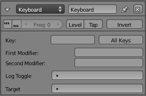

Keyboard Sensor¶

{kind=link}
Keyboard sensor.
The Keyboard sensor is for detecting keyboard input. It can also save keyboard input to a String property.
See Sensor Common Options for common options.
Special Options:
- Key
- This field detects presses on a named key. Press the button with no label and a key to assign that key to the sensor. This is the active key, which will trigger the TRUE pulse. Click the button and then click outside of the button to deassign the key.
A FALSE pulse is given when the key is released.
- All keys button
- Sends a TRUE pulse when any key is pressed. This is useful for custom key maps with a Python controller.
- First Modifier, Second Modifier
- Specifies additional key(s), all of which must be held down while
the active key is pressed in order for the sensor to give a TRUE pulse.
These are selected in the same way as Key.
This is useful if you wish to use key combinations,
for example
Ctrl-RorShift-Alt-Escto do a specific action. - Log Toggle
- Assigns a Bool property which determines if the keystroke will or will not be logged in the target String. This property needs to be TRUE if you wish to log your keystrokes.
- Target
- The name of property to which the keystrokes are saved. This property must be of type String. Together with a Property sensor this can be used for example to enter passwords.